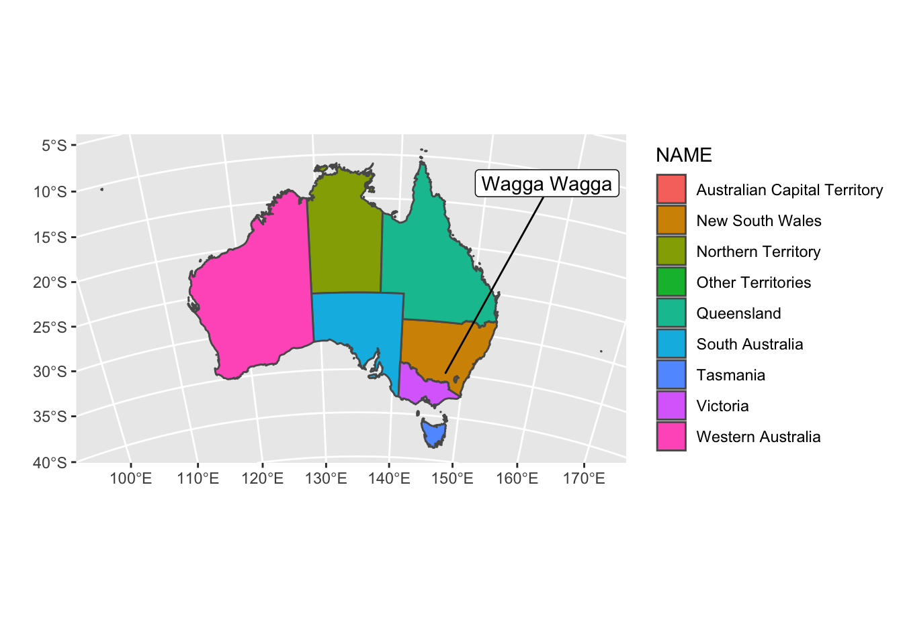

Lab 05: Logistic Regression + KNN Classification
Introduction
We will try to predict if it rained the next day in Wagga Wagga, Australia given certain environmental and climate conditions the previous day. Our data, obtained from Kaggle, consist of measurements of these variables on Fridays from 2009-2016.
The variables are as follows:
Evaporation: The so-called Class A pan evaporation (mm) in the 24 hours to 9amSunshine: The number of hours of bright sunshine in the dayWindSpeed3pm: Wind speed (km/hr) averaged over 10 minutes prior to 3pmHumidity3pm: Humidity (percent) at 3pmPressure3pm: Atmospheric pressure (hpa) reduced to mean sea level at 3pmCloud3pm: Fraction of sky obscured by cloud (in “oktas”: eighths) at 3pmTemp3pm: Temperature (degrees C) at 3pmRainTomorrow: “yes” or “no” for whether it rained the next day
Data
First, load in your data located in the weatherWaggaWagga.csv file. We will consider RainTomorrow = "yes" to be the success class. Pick one quantitative and create side-by-side boxplots that display the distribution of that variable for each level of RainTomorrow. Also display a table of the total number of successes and failures in the data. Interpret your plot, and comment on the table.

RainTomorrow n
1 No 288
2 Yes 65Part 1: validation set approach
We will compare the performance of logistic regression with that of KNN classification using a validation set approach.
Test/train split
First split your data into an 80% train and 20% test set using a seed of 41.
Logistic regression
Fit the model
Fit a logistic regression to the training data for RainTomorrow using all the remaining variables in the dataset. Display a summary of the model, and interpret the coefficient for the variable you chose to visualize in the EDA section. How, if at all, is the probability of it raining tomorrow in Wagga Wagga associated with that predictor?
Hypothesis tests of the form \(H_{0}: \ \beta_{j} =0\) vs \(H_{a}: \ \beta_{j} \neq 0\) can be formulated for the coefficients in logistic regression just as they are in linear regression!
Call:
glm(formula = RainTomorrow ~ ., family = "binomial", data = train_dat)
Deviance Residuals:
Min 1Q Median 3Q Max
-2.0465 -0.4421 -0.2349 -0.0830 3.0848
Coefficients:
Estimate Std. Error z value Pr(>|z|)
(Intercept) 76.23317 44.93089 1.697 0.08976 .
Evaporation 0.07526 0.08969 0.839 0.40141
Sunshine 0.01264 0.09066 0.139 0.88916
WindSpeed3pm 0.03595 0.02721 1.321 0.18651
Humidity3pm 0.08671 0.02028 4.276 1.91e-05 ***
Pressure3pm -0.08679 0.04378 -1.983 0.04740 *
Cloud3pm 0.38056 0.14020 2.714 0.00664 **
Temp3pm 0.13956 0.05842 2.389 0.01690 *
---
Signif. codes: 0 '***' 0.001 '**' 0.01 '*' 0.05 '.' 0.1 ' ' 1
(Dispersion parameter for binomial family taken to be 1)
Null deviance: 269.59 on 281 degrees of freedom
Residual deviance: 158.32 on 274 degrees of freedom
AIC: 174.32
Number of Fisher Scoring iterations: 6Predict
Now, obtain predicted labels for the test data using a threshold probability of 0.5. Importantly, because the data are in "yes"/"no" and not 1/0, your predictions should also be in terms of "yes"/"no".
Then create a confusion matrix for the test set using the table() function. Using code, obtain and report the misclassification rate, false negative rate, and false positive rate for the data. This can be achieved using either tidyverse or base R.
Comment on which is larger: your FPR or your FNR. Do these values make sense to you given the data?
log_preds No Yes
No 56 8
Yes 2 5[1] 0.1408451[1] 0.6153846[1] 0.03448276KNN Classification
Now we will fit a KNN model to predict RainTomorrow using K = 10 neighbors. As our predictors are on completely different scales, first properly standardize your train and test data sets before fitting the model. You may either use your own implementation of KNN classification, or you may use the knn() function from the class library.
Under this model, create a confusion matrix for the test set. Using code, obtain and report the misclassification rate, false negative rate, and false positive rate for the data. How do your rates compare to those obtained under the logistic regression model?
knn_preds_std No Yes
No 55 9
Yes 3 4[1] 0.1690141[1] 0.6923077[1] 0.05172414Part 2: stratified k-fold CV
At this point, we know that k-fold CV is a better approach to estimating the test error compared to a validation set approach. Because we have relatively few observations with responses falling into one of the classes, we will implement stratified k-fold CV.
Create folds
Here, create your folds for stratified k-fold CV using 10 folds. Set a seed of 41 again.
Remember, in stratified k-fold CV, the proportions of each label in each fold should be representative of the proportion of each label in the entire data set. This is the most difficult part of the lab, so think carefully about what you want to do! It could be helpful to write down your thoughts.
Logistic regression
Now, fit logistic regression model using the stratified 10-fold CV approach to estimating the test error. Report the estimated test misclassification, false negative, and false positive rates under this model.
[1] 0.1242337[1] 0.4928571[1] 0.04189017KNN classification
Once again using K = 10 neighbors and 10 folds, fit a KNN classification model with stratified k-fold CV using standardized predictors. Report the estimated test misclassification, false negative, and false positive rates under this model.
[1] 0.1471264[1] 0.6428571[1] 0.04189017How do the prediction performances of your two models compare based on the estimated test error using stratified 10-fold CV?
Part 3: Comprehension
- I also obtained estimates of the test error rates when performing regular 10-fold CV (i.e. non-stratified). The following shows my results:
| Misclass. rate | FNR | FPR | |
|---|---|---|---|
| Logistic | 0.1114 | 0.4322 | 0.0313 |
| KNN | 0.1486 | 0.6446 | 0.0347 |
Based on these results, what comparisons (if any) can you make about the performance of the models fit here and the models fit in Part 1 or Part 2? What is the correct way to explain why the results I obtained here are different than the rates you obtained via stratified k-fold CV (apart from the simple fact that we used different fold ids)?
- Compare the magnitudes of your estimated misclassification test error rates when using the validation set approach vs the stratified k-fold CV approach. Does this make sense to you? Why or why not?
- In this problem, do you think a false positive or a false negative rate is worse? Based on your answer, should you increase or decrease the threshold? Why?